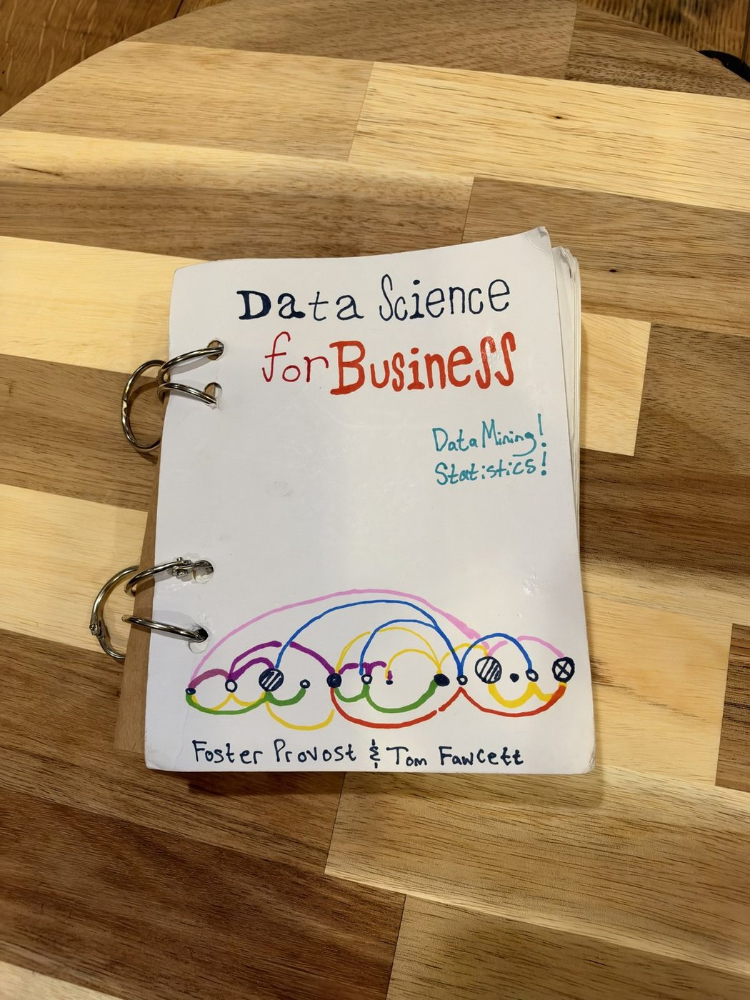
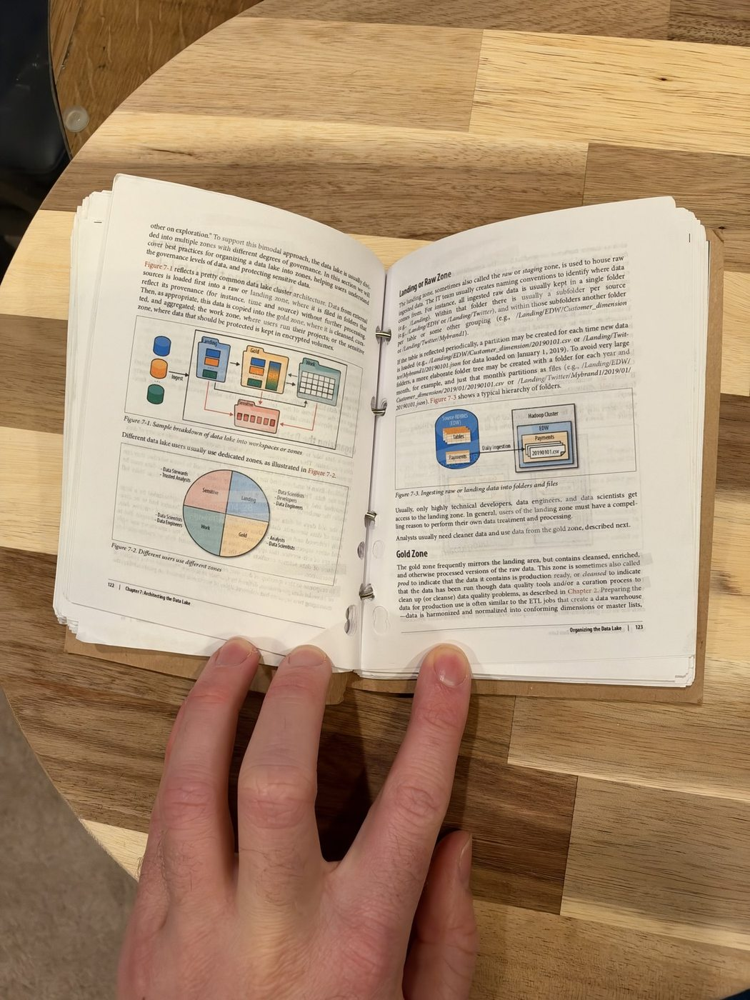
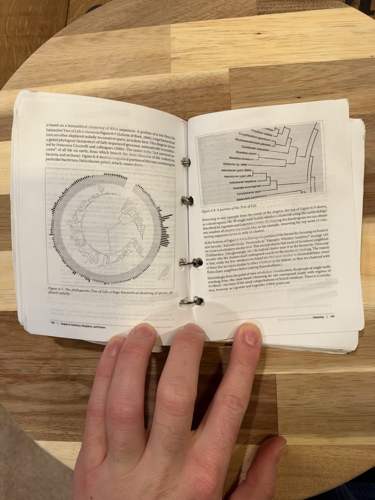
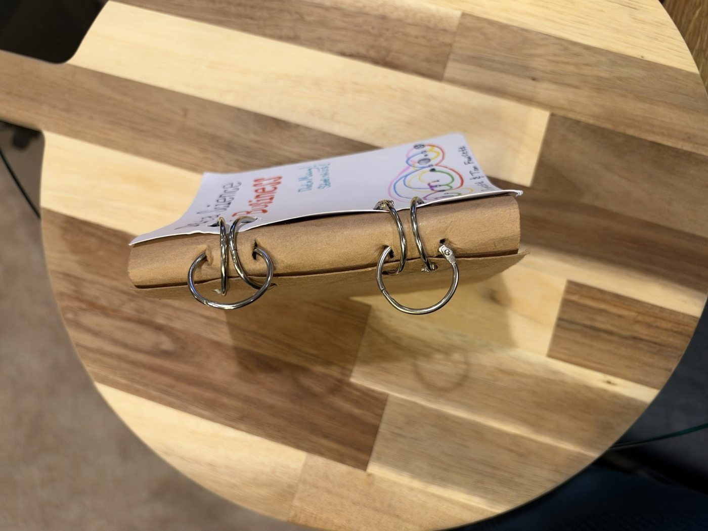
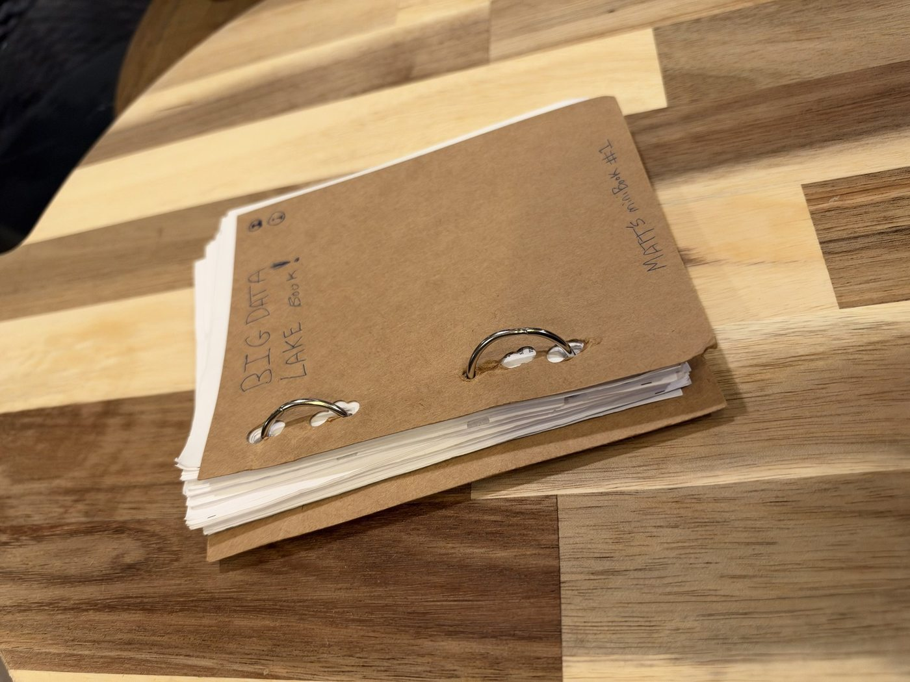
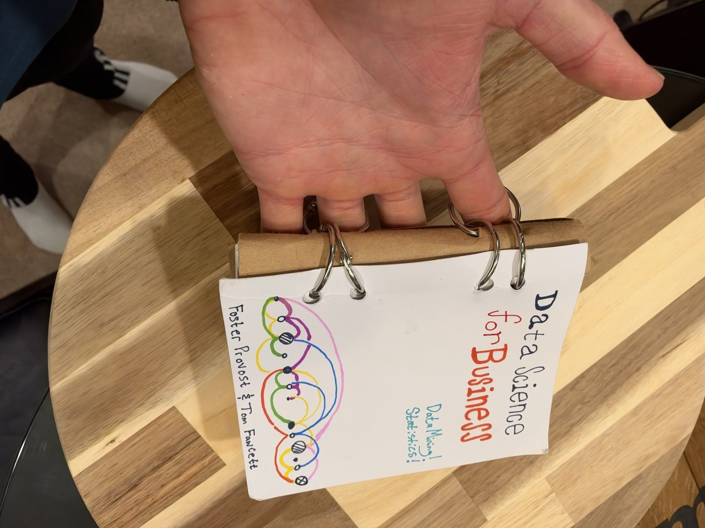
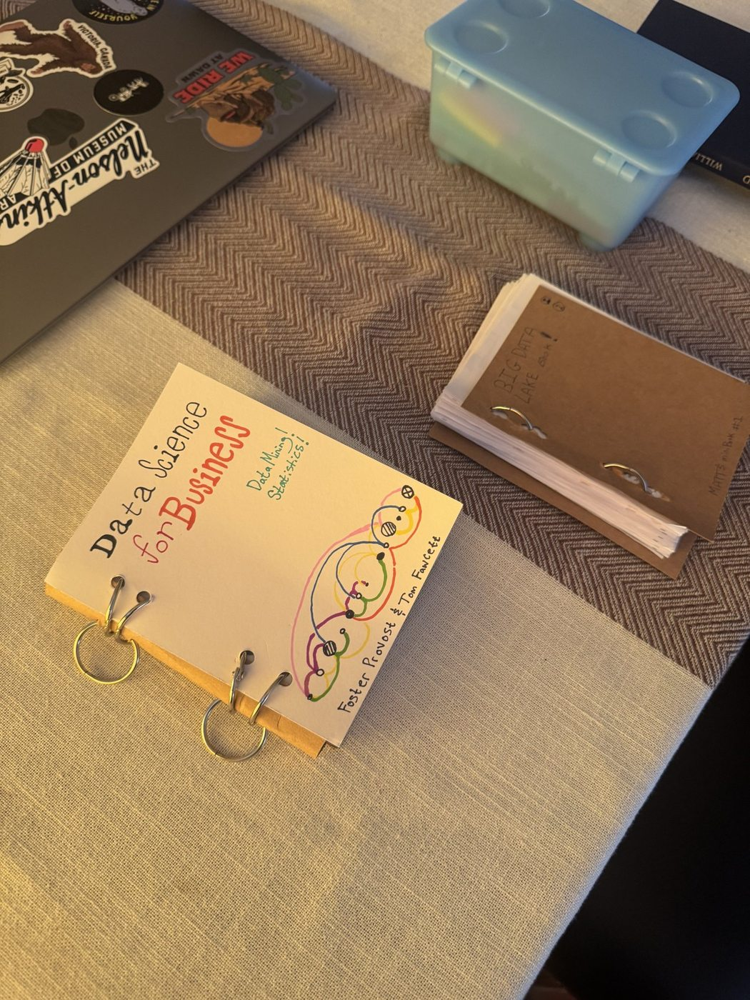
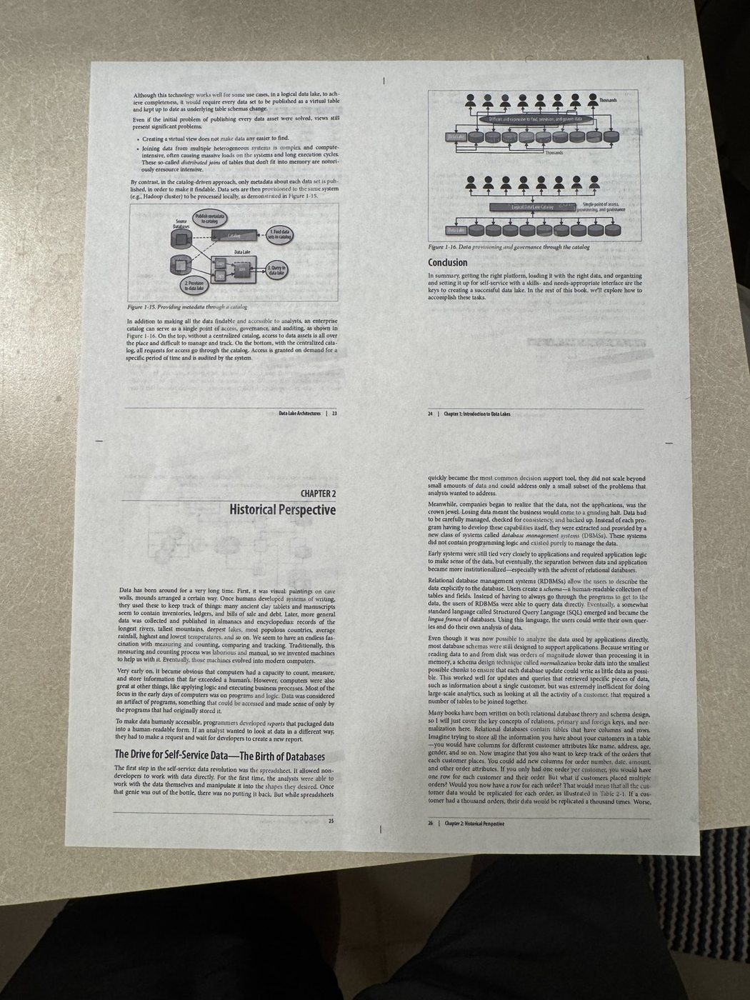

PERSONAL PROJECT / CREATIVE PUBLISHING / NATIVE MACOS
Mini Bookmaker
I developed a tool to turn PDFs into printable, ring-bound miniature books. What began as a physical making project became a problem of page order, print geometry, and software design.

01 / THE IDEA
From PDF to physical object.
Making a miniature book is more than shrinking a PDF. The original reading order has to become a printable page arrangement, with matching front and back faces and a consistent way to cut, stack, and bind the sheets.
I wanted to make that process repeatable through a desktop application while keeping the hands-on aspect of making each book.
02 / THE PHYSICAL WORK
Finished books, up close.
Original photographs from my personal project. These show the books as physical objects, including handmade covers, printed pages, and the binding system.
Handmade illustrated cover
A finished book makes the digital layout problem tangible.
View original image ↗Print small without losing the visual story

Color diagrams in a miniature book
The printed interior preserves diagrams as well as text.
View original image ↗
Technical diagrams in print
Technical material in a compact physical format.
View original image ↗Make a book, not just a booklet

Ring binding up close
Ring binding lets individual leaves turn independently; hole alignment matters.
View original image ↗
The closed book and leaf stack
The book's thickness creates a binding constraint, not just a page-layout constraint.
View original image ↗
A book in hand
The original photograph gives a sense of the physical scale.
View original image ↗Personal, usable printed objects
Reading the finished book
An actual use of the completed physical prototype.
View original image ↗
Two physical book examples
Different physical examples document the personal experiment.
View original image ↗Explore all 17 original photographs in the project repository ↗
03 / SOFTWARE TO PAPER
Make the layout predictable.
MiniBook Maker 2.1 is a Swift macOS prototype that combines PDF processing, page ordering, preview and export. The software separates reading order from physical printing order.
Select full PDF pages or two-page spreads and arrange the reading order.
Map logical pages to front and back faces for each cutting batch.
Review page positions and punch guides before exporting.
Print double-sided, cut the stack, order the piles and bind.
Select and arrange pages
Working prototype · Page selection and order control before building the booklet.
View original image ↗
Print-ready sheet preview
Working prototype · A physical imposition preview with front/back sheet navigation.
View original image ↗
Four pages on a printed sheet
A photograph of the printed intermediate output before the individual leaves are assembled.
View original image ↗THE ALGORITHM
Cut-stack imposition
A full eight-sheet batch contains 64 logical pages. The four piles correspond to contiguous ranges of pages, so they can be stacked after cutting rather than sorted individually.
Example from the documented version 2.1 page-order contract.
First front sheet · four 4.25 × 5.5 in pages
04 / THE MATHEMATICS
Design around the binding.
Ring diameter and stack thickness influence the spacing between punch guides. Version 2.1 calculates the spacing for individual leaves using circular chord geometry.
r = ring radius · d = leaf depth relative to the center of the stack.
Conceptual geometry diagram · not a measurement of a photographed book.WHY IT MATTERS
Connect the software to the physical constraints
The front and back guides mirror horizontally for long-edge duplex printing. The software checks incompatible ring and stack geometry before export.
The documented 200-page example uses a 1-inch ring and estimated paper caliper to calculate different hole spacing near the outside and center of the stack. Actual printing and alignment still depend on the printer and physical assembly.
Read the original technical notes ↗05 / SOFTWARE ENGINEERING
Explore the source.
The standalone repository includes the recovered Swift source, build scripts, documentation, original tests, screenshots and all 17 photographs.
The repository records a successful rerun of the pure-Swift regression suite during the source preparation. The native GUI and physical printing were not retested in that preparation; photographs demonstrate actual prototypes, not a controlled accuracy test.
Independent development
I combined physical prototyping, interface design, PDF workflows and mathematical layout logic in one personal project.
Refine the workflow
Further work includes physical calibration and repeatable print checks across different paper and printer configurations.
PROJECT STATUS
Version 2.1 is a working prototype with published source. Follow its documented print settings, and use the calibration sheet before producing a complete book.